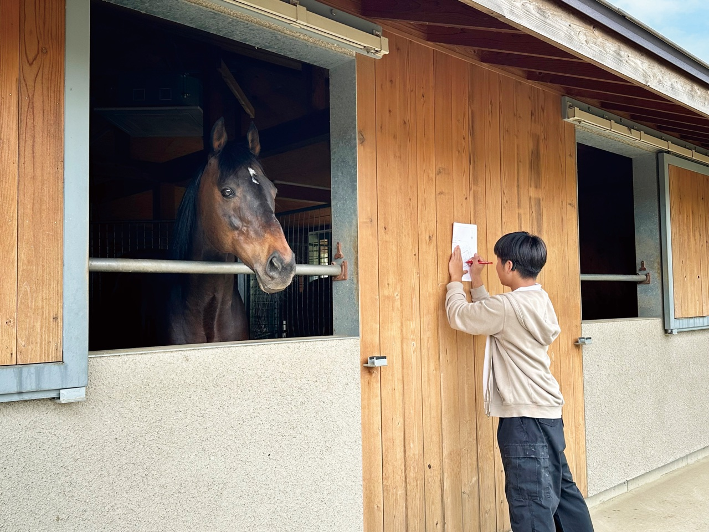
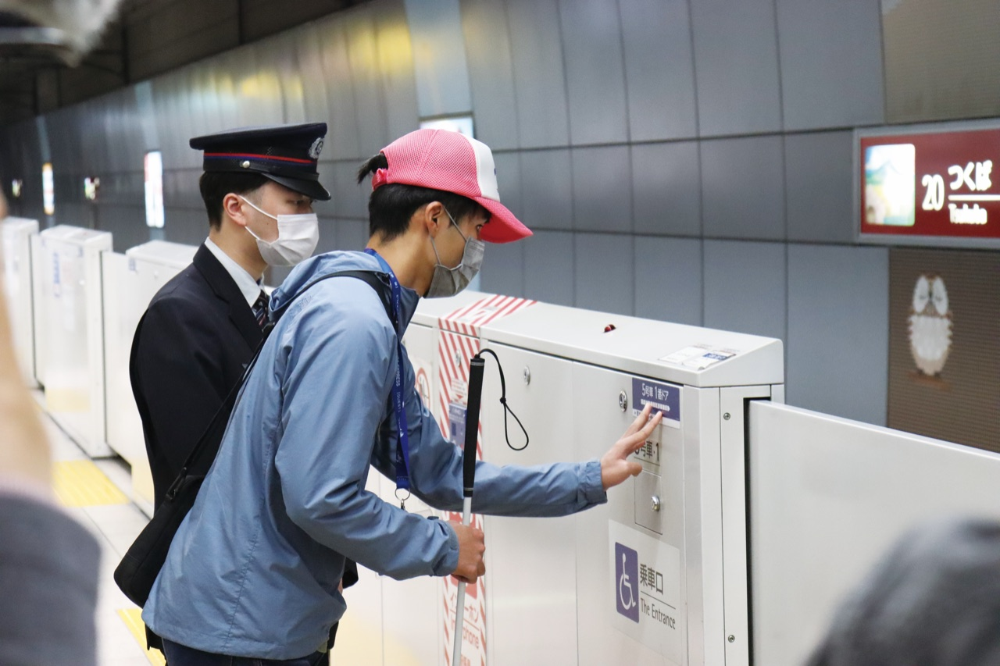
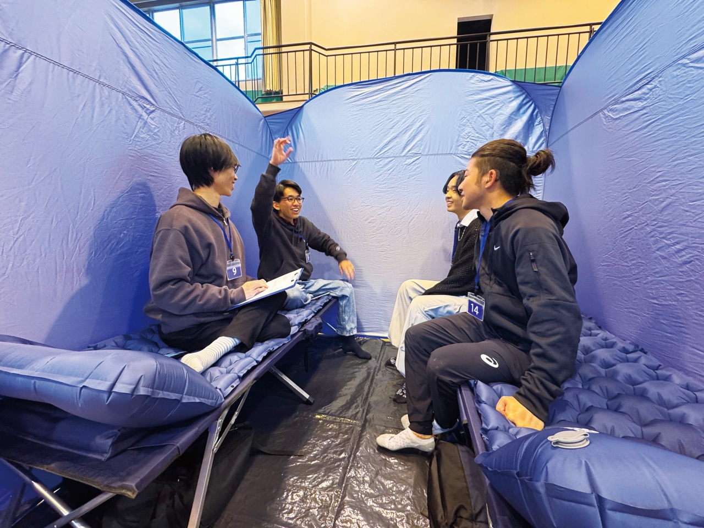
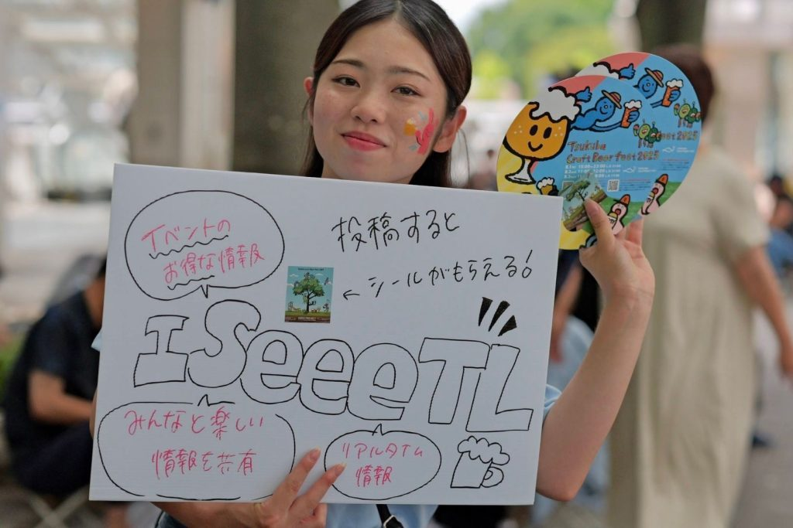
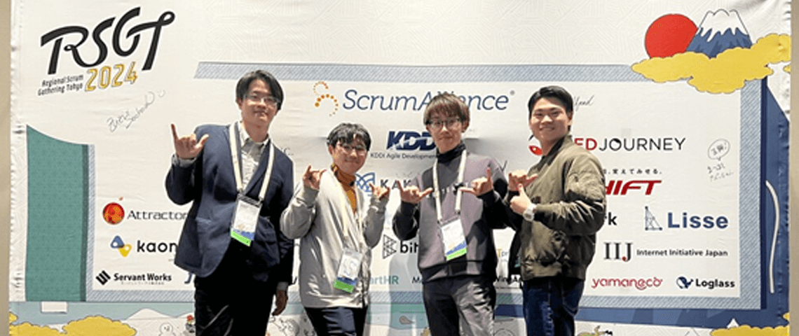

地域・企業とともに社会をつくる
他大とは異なる、産業技術学部の地域・企業連携の特色。
一人ひとりが主役です
授業や演習、課外活動、卒業研究など、日常の学びの一部です。 特別な誰か、大学院生だけ、特定の研究室だけの取り組みではありません。 皆さん一人ひとりに、社会とつながる機会が開かれています。
「きこえない・きこえにくい」の経験が、社会を変える力になる
皆さんが経験した困りごと・違和感の中に、まだ意識されていない社会課題が隠れています。 きこえない・きこえにくい人が集う技大で、多様な価値観や困りごとを共有し、 仲間や教員とともに考え、手を動かし、社会を良くするアイデアに変換します。
社会から期待される「未来の技術」を、地域や企業と共につくる
きこえない・きこえにくい人の視点から社会課題を発掘するにとどまらず 情報、機械、建築、デザイン、それぞれの知識や技術を組み合わせ、 誰もが暮らしやすい社会を共につくる担い手として、求められています。
連携事例
コース（学科・領域）ごとに色を分けています。各カードをクリックすると詳細ページが開きます。
 総合デザイン学科
気象庁
「津波フラッグ」制定への協力と、要配慮者対策の意見交換。
詳しく見る →
総合デザイン学科
気象庁
「津波フラッグ」制定への協力と、要配慮者対策の意見交換。
詳しく見る →
 デザイン系
羽田空港
社会を変えるデザイン — 空港UDプロジェクト。
詳しく見る →
デザイン系
羽田空港
社会を変えるデザイン — 空港UDプロジェクト。
詳しく見る →

建築・福祉住環境学 ブリコラージュ 引退競走馬と育む暮らしの場のデザイン提案・実現。 詳しく見る → 建築・福祉住環境学
日本橋室町エリアマネジメント
オフィスや街のユニバーサルデザインの検証と改善提案。
詳しく見る →
建築・福祉住環境学
日本橋室町エリアマネジメント
オフィスや街のユニバーサルデザインの検証と改善提案。
詳しく見る →
 情報・機械・建築・デザイン
つくば市（職員UD研修）
つくば市職員ユニバーサルデザイン研修。2007年から継続。
詳しく見る →
情報・機械・建築・デザイン
つくば市（職員UD研修）
つくば市職員ユニバーサルデザイン研修。2007年から継続。
詳しく見る →

全領域 TX つくばエクスプレス 公共交通におけるUX・情報設計の実践。 詳しく見る →
全学部 つくば市（避難所体験） 障害当事者視点による避難所運営体制の改善提案。 詳しく見る →
全学部 三菱総研DCS 情報共有プラットフォーム「ISeee TimeLine」の共同実証。 詳しく見る → 情報系
YYSystem
リアルタイム音声認識システムの開発チームへの参加。
詳しく見る →
情報系
YYSystem
リアルタイム音声認識システムの開発チームへの参加。
詳しく見る →
 情報系
株式会社リコー
コミュニケーションサービスPekoeへの新規機能提案と開発。
詳しく見る →
情報系
株式会社リコー
コミュニケーションサービスPekoeへの新規機能提案と開発。
詳しく見る →
 情報系
ピクシーダストテクノロジーズ
ろう・難聴者と聴者のコミュニケーション促進の研究（VUEVO）。
詳しく見る →
情報系
ピクシーダストテクノロジーズ
ろう・難聴者と聴者のコミュニケーション促進の研究（VUEVO）。
詳しく見る →

情報系 RSGT（情報保障） イベントにおける情報保障体制の提案と設計。 詳しく見る → 支援技術学コース
株式会社丹青社
指文字認識AIを活用したスポーツゲームコンテンツの共同開発。
詳しく見る →
支援技術学コース
株式会社丹青社
指文字認識AIを活用したスポーツゲームコンテンツの共同開発。
詳しく見る →
企業が連携を求める理由
技大の独自性 — 大学で起きていることが、なぜ企業の価値になるのか。
ダイバーシティ&インクルージョンが進む現代社会に求められる役割を、当事者としての経験・知見を活かしつつ、社会実装するまでの過程で学ぶことができます。技大の独自性は「根・幹・葉」の3層で説明できます。
大学で起きていること
- 「聞こえない人」がマジョリティ
- 音声に依存しない情報設計の確立
企業が求める理由
「マイノリティ＝例外」の企業にとって、
- 通常のユーザー調査では絶対に取れない
- 倫理配慮／同調圧力のない行動データ
大学で起きていること
- 個別最適な支援知識として閉じず
- 普遍的な実践知へと再構成
企業が求める理由
公平性／汎用性を重視する企業にとって、
- 「障害者の話」で終わらない
- マイノリティ一般に拡張可能
大学で起きていること
- 当事者の不満をそのまま主張しない
- 他者の価値観や制約と擦り合せる
- 実装可能な提案に翻訳
企業が求める理由
事業性を重視する企業にとって、
- 社会性と事業性を両立できる
- 炎上しにくいインクルーシブ設計